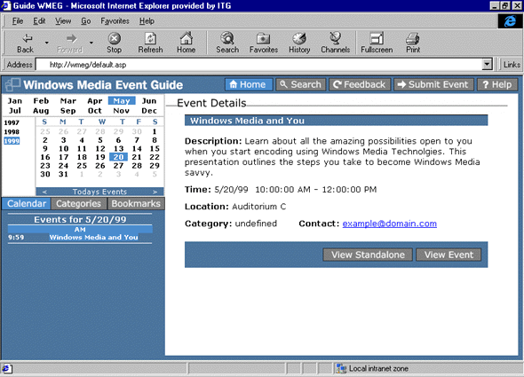
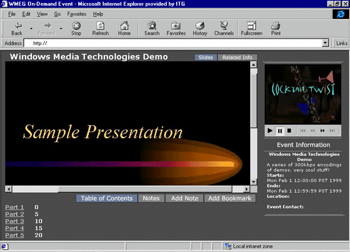
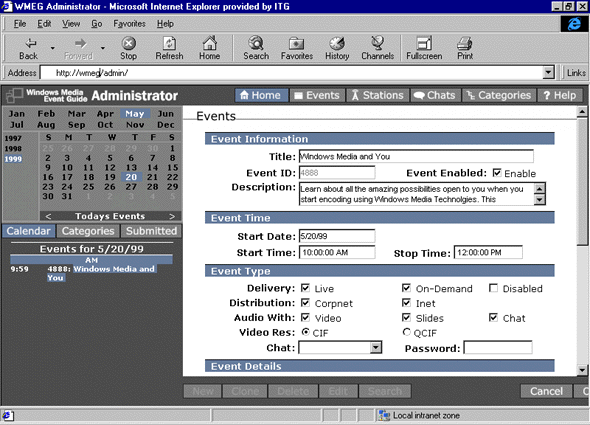

|
| ||
|
| ||
Bill Birney
Microsoft Corporation
Posted April 14, 1999
Contents
Introduction
Who Should Use Windows Media Event Guide?
System Requirements
Windows Media Event Guide Components
Summary
Using Microsoft Windows® Media Event Guide, you can create a Web site that hosts streaming media content. Users can come to your site to locate and play live events and on-demand content that are created using Windows® Media Technologies version 4.0. The event guide you create and manage using the Windows Media Event Guide tools, templates, and HTML pages can be the foundation of a multimedia communications network on a corporate intranet or on the Internet. As your needs change, you can customize Windows Media Event Guide to meet your individual requirements. Windows Media Event Guide includes the following components:
This article discusses who should use Windows Media Event Guide, system requirements, and describes its components.
Windows Media Event Guide is for anyone who maintains media content that is accessed by viewers. Windows Media Event Guide can be used in a small company as an internal database tool or by a large Webcaster. The foundation exists for expansion into many areas. Change the look of the viewer interface: add graphics, or reposition frames. Change the administrator interface: add database fields, and integrate Windows Media Event Guide easily with existing processes. Change the backbone relationships: upgrade to Microsoft SQL Server, track metrics with Microsoft Site Server, and integrate event notification and reminders with Microsoft Exchange Server. Windows Media Event Guide has all the depth of a finished application but can easily be customized by the user.
Windows Media Event Guide was originally created for Microsoft's own internal Windows Media network. As the network evolved and its popularity among Microsoft internal groups increased, the internal network's event guide interface evolved and grew. Early on it became apparent how important it is to have an easy-to-maintain system in place that is capable of handling a great deal of content and that is also flexible and reliable. In 1998, the Microsoft internal guide was the aggregating site for more than 2,000 events and 5,000 hours of content. The intranet site receives nearly 30,000 hits a month. Today, the group is expanding their internal Windows Media Event Guide interface to create detailed usage reports, which can be used outside the group for budgeting purposes.
Windows Media Event Guide has the following hardware and software requirements:
The viewer interface was designed to be intuitive and practical, as well as capable of organizing a wealth of information.
Browsing live events by date
As a casual viewer, you can come to a Windows Media Event Guide site with no particular event in mind and browse through the offerings using the calendar.

The guide page is a dynamically generated Active Server Pages (ASP) page. When it opens, the current date is selected on a calendar and the live events are listed. You can browse through today's list of events or click another date on the calendar and view the events planned for that day. If you find an event title that seems interesting, click the title and the Event Details screen appears. The Event Details screen provides a more complete description of the event, the starting and ending time, a contact name, a location, and a category. If you find an event you like, you can either click View Standalone to view the media in a stand-alone Windows Media Player or click View Event to view the event in a Web page.
Using the presentation page
When the Windows Media Event Guide presentation template is used, a screen similar to the following screen appears.

Windows Media Player is embedded in the upper-right corner of the screen and event information is listed below. As the presentation plays, script commands contained in the Advanced Streaming Format (ASF) file change the images in the large image area on the left. If markers are present in the .asf file, the page reads them and dynamically creates a table of contents. You can click a table of contents entry, and Windows Media Player moves to that part of the presentation.
The presentation template also lets you add personal notes. Use Notes to leave a personal reminder about a concept or topic while you are viewing the presentation. After adding notes, the next time you return to the page, all you have to do is click Notes and the reminder appears. You can also add a personal bookmark while viewing a presentation. When you do so, a link is created. The next time you come to the guide page, any personal bookmarks you have added appear in the list below the calendar. To view a presentation again, click the bookmark link.
Live training or corporate communication events can take advantage of the presentation template. For example, a videotape of the person giving the presentation can be shown along with synchronized images of charts or bulleted text. The presentation template page can be customized for any application. Because all presentation elements are contained within the .asf file and Windows Media Event Guide database, very little of the presentation page must be changed from one event to the next.
Browsing events or on-demand files by title
Use Windows Media Event Guide to browse by title for any event or on-demand .asf file that is part of the Windows Media Event Guide database.
From the guide page, click Categories. A tree view list opens below the calendar. Click the + icon to the left of Categories, and the list expands to show all of the categories available to a viewer. Click the + icon beside a category to view individual events or on-demand .asf files within a category, and click one of those to view event details. As with the Calendar view, clicking View Standalone or View Event opens the content. If you have created any bookmarks, click Bookmarks to open a list of bookmarks below the calendar.
Windows Media Event Guide search can also be used to locate events or content. When the search form opens, enter keywords to initiate a search in the title and/or description fields of the database.
Two other useful buttons available to the viewer are Feedback and Submit Event. Feedback allows the viewer to send comments back to the producer of the event. Submit Event opens a form that the viewer can use to submit a request for an event. This feature helps expedite the pre-production process by collecting important information about the upcoming event.
The Windows Media Event Guide Administrator gains access to the viewer interface and database via the Administrator interface. This interface consists of one main Administrator page and various user-input pages that open in a large frame on the right side of the main page.

With this interface, an athe administrator edits submitted event requests, creates new event guide entries, enters all pertinent data, and then enables events. Once saved and enabled, the data is entered into the database, which is then used to build the .asp pages that are accessed by end users.
This page also allows administrators to add to and edit the category list and perform other housekeeping functions. If a chat is to be connected with a live event, it can be added with this interface. When a viewer opens the event, chat controls and objects are automatically added to the page and configured.
If your company uses streaming media, you will eventually need a way to administer and control the media as well as provide a useful, intuitive tool with which viewers can access the media. Windows Media Event Guide can be the essential infrastructure of such a system, whether you are using Windows Media Technologies as an internal corporate communications tool or as the core of a streaming media business on the Internet. And with the great flexibility inherent in the Windows Media Event Guide templates, you have a system that evolves and grows with you.
Did you find this material useful? Gripes? Compliments? Suggestions for other articles? Write us!
© 1999 Microsoft Corporation. All rights reserved. Terms of use.